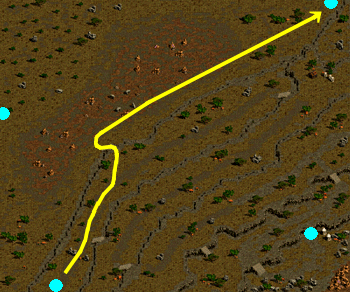
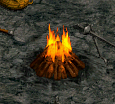

3次転生クエスト
2つの分岐ルートがある。総経験値1億250万〜1億750万。| 果てなき欲望 | |||
| ↓ 優れた建築家 ↓ |
↓ 強力な促進剤 ↓ |
||
| ハイランダーの脅威 | |||
| ↓ 信頼されし転生者 ↓ デフヒルズの水源 ↓ 水源発生の原因 ↓ 3度目の転生 |
↓ 赤い宝石のかけらの正体 ↓ 真実 ↓ 運命の綛糸を奪取しろ！ ↓ 1つ始まりは、他の新たな始まりを呼ぶ |
||
| 果てなき欲望 | |
|---|---|
ベン・ダビーユから、再び転生したければ、ファウンティンス・ハイランドにいるリュナス・エールを訪ねるように言われた。 リュナス・エールは、ファウンティンス・ハイランドに新しい支部の建設に関する任務を担当しているらしい。支部建設のため、ベルンを訪ねて、建設の障害となる地盤問題について聞いてみよう。 ベルンは、測量作業中にモンスターから襲撃されてしまった。自分の協力を受けたければ、サティロスとスナッチャーに奪われてしまった測量道具と食料袋を取り返してくるように言われた。 ベルンの測量道具と食料袋を取り戻した。ベルンのところに戻ろう。 |
|
| 受諾場所 | 酷寒の地 ベン・ダビーユ（16.42） |
| 受諾条件 | Lv598 キャンセル不可 |
| 報酬 | 経験値250万 |
| ファウンティンス・ハイランド | クェレスプリング湖のゼブ・ネイロリ（85.192）に話し、酷寒の地へワープしてクエスト受諾 ◆リュナス・エール（189.217）へ 鉱山町ハノブ←↑↑↑     |
| ソゴム山脈赤山 | ベルン（214.199）へ サティロス（Lv100)とスナッチャー（Lv100)を倒す ベルンへ ?地盤の特性を利用した建築方法を教えてください。 → ?はい。 → 優れた建築家 ?錬金術を利用する方法を教えてください。 → ?はい。 → 強力な促進剤 |
| 優れた建築家 | |
ベルンは、問題解決には経験豊富な建築家の助けが必要だという。ベルンから紹介されたゴードンを訪ねて、協力してもらえるように説得してみよう。 ゴードンは、自宅に行ってお酒を持って来たら、話を聞いた上で協力するかしないか考えてくれるという。中央プラトン街道 / グレートフォレスト入口付近にあるゴードンの家に行き、お酒を持ってこよう。 ゴードンが喜ぶ情報を得た。お酒と一緒にグラリスの話を伝えよう。 ゴードンが、再び建築の仕事を始めると言う。ソゴム山脈赤山にいるベルンにゴドンの手紙を渡そう。 ベルンも、赤山での仕事を早く仕上げて出発すると言う。ベルンが書いてくれた建築契約書をリュナス・エールに渡そう。 |
|
| 受諾場所 | ソゴム山脈赤山 ベルン（214.199） |
| 受諾条件 | Lv598 キャンセル不可 |
| 報酬 | 経験値1000万 |
| ブレンティル酒場 | ゴードン（19.6）へ |
| 中央プラトン街道 / グレートフォレスト入口付近 | グラリス（162.209）へ |
| ブレンティル酒場 | ゴードンへ |
| ソゴム山脈赤山 | ベルンへ |
| ファウンティンス・ハイランド | リュナス・エール（189.217）へ |
| 強力な促進剤 | |
ベルンは、玄武岩のような硬い地盤の問題を解決することができる錬金術師を知っているという。ベルンが紹介してくれた鉱山町ハノブにいる錬金術師フィービーに会いに行こう。 錬金術師フィービーが、岩石の風化作用を促進させるための薬を製造するためには、デスピンサーの毒とアーマーゴーレムの心臓が必要だと言う。デスピンサーとアーマーゴーレムを退治して薬の製造に必要な材料を集めよう。 フィービーから言われたデスピンサーの毒とアーマーゴーレムの心臓をすべて手に入れた。この材料をフィービーに渡そう。 フィービーが完成させた魔法の薬をベルンのところに持って行こう。 魔法の薬の威力がとても強かったため、ベルンが少しだけ中和してくれた。ベルンにもらった中和した魔法の薬をファウンティンス・ハイランドにいるリュナス・エールに渡そう。 |
|
| 受諾場所 | ソゴム山脈赤山 ベルン（214.199） |
| 受諾条件 | Lv598 キャンセル不可 |
| 報酬 | 経験値1500万 |
| 鉱山町ハノブ | フィービー（106.96）へ |
| 呪いを受けたミズナの洞窟 Ｂ１ | デスピンサー（Lv510)を倒す |
| タトバ山 | アーマーゴーレム（Lv480)Zinを倒す |
| 鉱山町ハノブ | フィービーへ、HP1/2のダメージを受ける |
| ソゴム山脈赤山 | ベルンへ |
| ファウンティンス・ハイランド | リュナス・エール（189.217）へ |
| ハイランダーの脅威 | |
リュナス・エールから、ファウンティンス・ハイランドで乱暴な行動をするハイランダーたちを退治するように言われた。ファウンティンス・ハイランドにいるハイランダーたちを退治しよう。 ファウンティンス・ハイランドにいるハイランダーたちの退治が完了した。リュナス・エールのところに戻って報告しよう。 リュナス・エールが、ファウンティンス・ハイランドにいるハイランダーは、ごく一部に過ぎないという。ハイランド洞窟のハイランダーたちを退治して、これ以上、被害が出ないようにしよう。 ハイランド洞窟のハイランダーたちの退治が完了した。リュナス・エールのところに戻って報告しよう。 リュナス・エールが言うには、ハイランダーが急に凶暴化した原因はハイランダー隊長にあるという。ハイランド洞窟の北東の方にある隠された通路からハイランド洞窟 Ｂ２に行き、ハイランダー隊長を退治しよう。 ハイランド洞窟のハイランダー隊長を退治した。リュナス・エールのところに戻って報告しよう。 |
|
| 受諾場所 | ファウンティンス・ハイランド リュナス・エール（189.217） |
| 受諾条件 | Lv598 キャンセル不可 |
| 報酬 | 経験値2500万 |
| ファウンティンス・ハイランド | ハイランダー（Lv120)を30匹倒す リュナス・エールへ |
| ハイランド洞窟 Ｂ１ | ハイランダー（Lv270)を50匹倒す、肌色と水色の2種類いるがどちらでも可 |
| ファウンティンス・ハイランド | リュナス・エールへ |
| ハイランド洞窟 Ｂ１ | ○焚火（190.60）をクリック、Ｂ２の外周へワープ   |
| ハイランド洞窟 Ｂ２ | ◆?−?（8.99）に話してハイランド洞窟の暗号を完了すると、内周へワープできる ▲ハイランダー隊長（Lv270)を倒す、5分湧き  |
| ファウンティンス・ハイランド | リュナス・エールへ ?(えーい、私には関係ない話だ！）はい。 → ?はい、お願いします。 → 酷寒の地へワープ 信頼されし転生者 ?(どう考えても暁の使者たちが何かを企んでいるのは間違いない･･･）いいえ → 赤い宝石のかけらの正体 |
| 信頼されし転生者 | |
リュナス・エールの依頼をすべて完了した。再び酷寒の地に戻って、ベン・ダビーユに報告しよう。 ベン・ダビーユから、自分の代理としてデフヒルズを管理している砂漠の番人ネイビーの手伝いをするように言われた。 砂漠の番人ネイビーに、自分の能力を証明したければ、オアシス周辺にいる殺人蚊の群れを退治して来いと言われた。殺人蚊の群れを退治して、ネイビーに自分の能力を証明しよう。 オアシス周辺の殺人蚊の群れを退治した。ネイビーのところに戻って報告しよう。 ネイビーの依頼通り、リプリートマーキを退治してリプリートマーキの霊石を手に入れてこよう。 リプリートマーキの霊石を手に入れた。ネイビーのところに戻って報告しよう。 |
|
| 受諾場所 | ファウンティンス・ハイランド リュナス・エール（189.217） |
| 受諾条件 | Lv598 キャンセル不可 |
| 報酬 | 経験値1500万 |
| 酷寒の地 | ベン・ダビーユ（16.42）へ |
| デフヒルズ | ネイビー（232.155）へ 殺人蚊の群れ（Lv187)Zinを20匹倒す ネイビーへ リプリートマーキ（Lv182)Zinを倒す ネイビーへ |
| デフヒルズの水源 | |
ネイビーから、デフヒルズに新しくできた水源の発生ポイント捜査のため、水気をいっぱい含んだサボテンを探すように言われた。 水源が発生した地点と推測される場所で育ったサボテンの根を手に入れた。ネイビーのところに戻って、水源発生場所を報告し、サボテンの根も渡そう。 ネイビーは、流れの石を利用してデフヒルズの水源発生を防ごうという。酷寒の地に戻って、ミーリアから流れの石を受け取ってこよう。 流れの石を手に入れた。ネイビーのところに戻って、石を渡そう。 ネイビーから、流れの石を利用して水源の発生を防ぐように言われた。水源発生の地点に行き、そこで育ったサボテンの横に流れの石を埋めてこよう。 デフヒルズの水源発生の地点に流れの石を埋めた。ネイビーのところに戻って報告しよう。 |
|
| 受諾場所 | デフヒルズ ネイビー（232.155） |
| 受諾条件 | Lv598 キャンセル不可 |
| 報酬 | 経験値2000万 |
| デフヒルズ | サボテン（39.120）をクリック  ネイビーへ |
| ファウンティンス・ハイランド | リュナス・エール（189.217）へ、酷寒の地へワープ |
| 酷寒の地 | ミーリア（18.33）へ |
| デフヒルズ | ネイビーへ サボテン（39.120）をクリック ネイビーへ |
| 水源発生の原因 | |
ネイビーから、モリネルタワーを研究しているファービスに会って、水源の異常現象に関して調べてくるように言われた。ガディウス大砂漠 / モリネルタワー付近にいるファービスを訪ねよう。 ファービスが言うには、デフヒルズの水源の異常現象は、モリネルタワーの影響ではなく、別の何かの影響らしい。ファービスから得た情報をネイビーに報告しよう。 ネイビーが、水源の異常現象の原因は、クラックスの封印が解けてしまったせいではないかと言う。ガディウス大砂漠 / モリネルタワー付近に行き、封印から解放さたばかりで完全ではない今のうちにクラックスを退治しよう。 クラックスを退治した。デフヒルズにいるネイビーに報告しよう。 デフヒルズの水源問題は、すべて解決した。酷寒の地にいるベン・ダビーユに報告しよう。 |
|
| 受諾場所 | デフヒルズ ネイビー（232.155） |
| 受諾条件 | Lv598 キャンセル不可 |
| 報酬 | 経験値3000万 |
| ガディウス大砂漠 / モリネルタワー付近 | ファービス（8.50）へ |
| デフヒルズ | ネイビーへ |
| ガディウス大砂漠 / モリネルタワー付近 | クラックス（Lv580)Zinを倒す |
| デフヒルズ | ネイビーへ |
| ファウンティンス・ハイランド | リュナス・エール（189.217）へ、酷寒の地へワープ |
| 酷寒の地 | ベン・ダビーユ（16.42）へ |
| 3度目の転生 | |
もう一度、運命の綛糸を解くためには、前回と同じように、神獣の体液が必要になると言う。モリネルタワー 地上４階に行き、ブレイザーから神獣の体液を手に入れよう。 運命の綛糸を解くための材料である神獣の体液を手に入れた。ファウンティンス・ハイランドのリュナス・エールに頼んで酷寒の地に行き、ベン・ダビーユに報告しよう。 |
|
| 受諾場所 | 酷寒の地 ベン・ダビーユ（16.42） |
| 受諾条件 | Lv600 キャンセル不可 |
| 報酬 | 3次転生 転生者Lv3 |
| モリネルタワー 地上４階 | ブレイザー（Lv620)Zinを倒す |
| ファウンティンス・ハイランド | リュナス・エール（189.217）へ、酷寒の地へワープ |
| 酷寒の地 | ベン・ダビーユへ |
| 赤い宝石のかけらの正体 | |
結局、リュナス・エールから、赤い宝石のかけらについて教えてもらえなかった。赤いかけらを渡すわけにはいかないので、これ以上、暁の使者たちと行動を共にすることはできない。しかし、このまま赤い宝石のかけらの正体が把握できないとなると大問題だ。まずは、鉱物の専門家であるアルバートを訪ねて聞いてみよう。 アルバートは、RED STONEのような赤い宝石のかけらは珍しい物だというが、まったく別の物だと断言した。もっと詳細な情報が知りたければ、鉱夫のデニールに聞いてみるように言われた。 デニールも、赤い宝石のかけらの正体が分からなかった。代わりに、自分の友達であり優れた冒険家でもあるドミトリなら、もしかしたら手がかりを知っているかもしれないと教えてくれた。ドミトリを訪ねてみよう。 ドミトリから、自分と親交のあるボルファーが、赤い宝石のかけらとまったく同じ物を持っていたので彼を訪ねるよう言われた。ボルファーは砂漠村リンケンにいるらしい。 |
|
| 受諾場所 | ファウンティンス・ハイランド リュナス・エール（189.217） |
| 受諾条件 | Lv598 キャンセル不可 |
| 報酬 | 経験値1500万 |
| 鉱山町ハノブ | アルバート（113.33）へ デニール（51.21）へ |
| ブルースビストロ | ドミトリ（16.13）へ |
| 砂漠村リンケン | ボルファー（82.57）へ |
| 真実 | |
暁の使者たちが隠している真実を解明するためには、まずグレートフォレスト/ 妖精達の蜘蛛の糸にいるジャフィナに会って、湖の妖精が残した手がかりを調べる方法を教えてもらおう。 ジャフィナに借りた盟約のネックレスを着けた状態で湖下の通路を隅々まで捜索してみよう。 湖の妖精が残した3つのメッセージを探し出した。しかし、妖精たちの言語だったため、何が書かれているのか分からない。グレートフォレスト/ 妖精達の蜘蛛の糸に戻って、ジャフィナにメッセージの翻訳を依頼しよう。 調査の結果、湖の妖精が誰に殺されたのか真実が解明された。ジャフィナに翻訳してもらった妖精のダイイングメッセージを持って、ボルファーのところに戻ろう。 |
|
| 受諾場所 | 砂漠村リンケン ボルファー（82.57） |
| 受諾条件 | Lv598 キャンセル不可 |
| 報酬 | 経験値2000万 |
| グレートフォレスト/ 妖精達の蜘蛛の糸 | ジャフィナ（20.21）へ |
| 湖下の通路 | 盟約のネックレスを装備して岩 (99.109) 、キノコ (100.34)、花 (182.104) をクリック    |
| グレートフォレスト/ 妖精達の蜘蛛の糸 | ジャフィナへ |
| 砂漠村リンケン | ボルファーへ |
| 運命の綛糸を奪取しろ！ | |
ボルファーの言葉通り、本格的に暁の使者たちと対立する前に、運命の綛糸を奪取しなければならない。すでにボルファーの仲間が酷寒の地に潜入しているので、受け渡し場所のオロイン森に急ごう。 ジョシュアの代理として運命の綛糸を運んでいるダイルンと接触するためには、神聖都市アウグスタ近くの麻薬巣窟に行ってみよう。 残念ながら、運命の綛糸は、麻薬密売業者のドクンが盗んで行ったカバンの中にあるようだ。彼を追いかけるために、ガディウス大砂漠 / グレートフォレスト北部地域に行こう。 ドクンが、素直に言葉を聞くようになるまでドクンの子分たちを懲らしめよう。 ドクンの子分たちは、すでに戦闘意欲を喪失したようだ。改めて、ドクンと話し合ってみよう。 無事に運命の綛糸を取り戻した。再び、ボルファーのところに戻ろう。 |
|
| 受諾場所 | 砂漠村リンケン ボルファー（82.57） |
| 受諾条件 | Lv598 キャンセル不可 |
| 報酬 | 経験値3000万 |
| オロイン森 | ジョシュア(133.196)へ |
| 麻薬巣窟 Ｂ１ | ダイルン（65.11）へ |
| ガディウス大砂漠 / グレートフォレスト北部地域 | ドクン（163.25）へ ドクンの子分（Lv500)Zinが非アクティブからアクティブになる、倒す ドクンへ |
| 砂漠村リンケン | ボルファーへ |
| 1つ始まりは、他の新たな始まりを呼ぶ | |
3回目の新しい人生が目前に迫ってきた。運命の綛糸を再び解くためには、材料となる神獣の体液を手に入れる必要がある。モリネルタワー 地上４階に行こう。 神獣の体液を手に入れた。再び、ボルファーのところに戻ろう。 |
|
| 受諾場所 | 砂漠村リンケン ボルファー（82.57） |
| 受諾条件 | Lv600 キャンセル不可 |
| 報酬 | 3次転生 転生者Lv3 |
| モリネルタワー 地上４階 | ブレイザー（Lv620)Zinを倒す |
| 砂漠村リンケン | ボルファーへ |